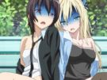
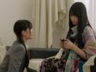
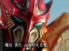
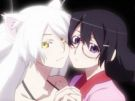
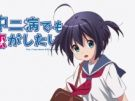

无限形态，变身的魔法阵相当华丽和大场面，就连变身时唱的歌仔也特别长，两集前的Beats Hyper就显得有点寒酸了。

朋少第二季总的来说，话题性和卖点都少了，故事也不吸引，从残念的日常篇转到恋爱篇，可见作者功力不够，转接很突然，观众感到很不自然。
魔王是个百看不厌的大美人，勇者是个处男，就这样魔王与勇者的幸福生活就开始了。动画版的卖点，自然是男女主角的声优——福山润和小清水亚美。

一人三役，美纱、真由、美杜莎，名副其实的三位一体，「姐」与妹之间的战争，中山绘梨奈这两集里的演出相当卖力，魔法少女即将诞生。

菲利普斯，火凤凰不死鸟，本作最初的干部之一，打不死灭不掉的他终于被晴人「收拾了」。这四集的脚本写得真不错，近几代拉打中少见的优秀短篇剧情。

被神所选中的班长中的班长、人中人的羽川翼，无所不知无所不能，做事光明磊落，这样的她也有不为人知的病情。

中二恋这片原作是轻小说，动画版由京阿尼制作，内容跟小说版不一样，六花和勇太的中二病恋爱史，这片分前半的中二，后半的恋爱。